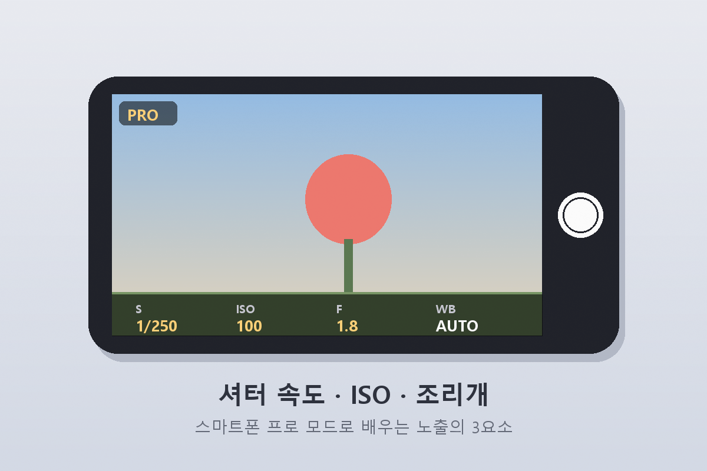
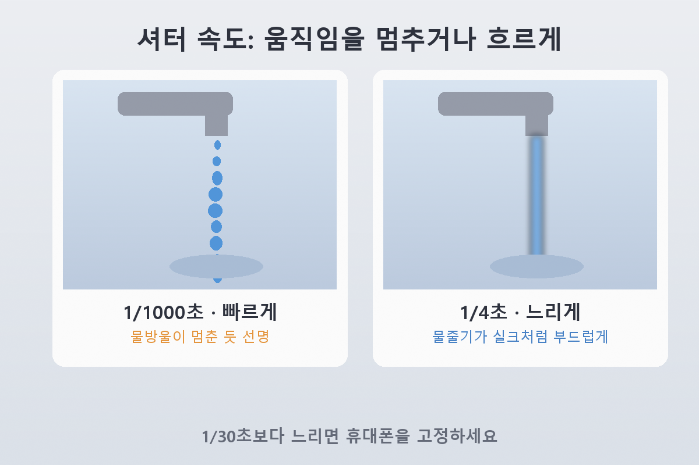
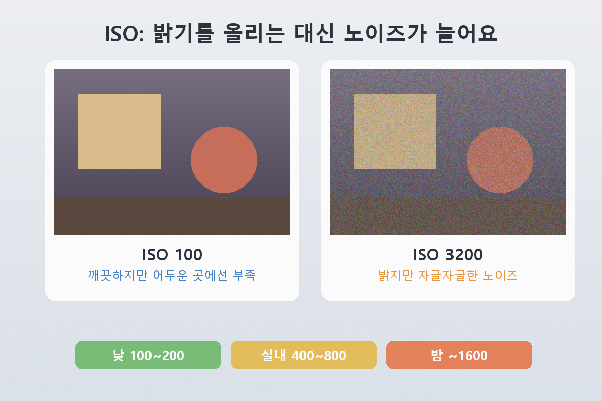
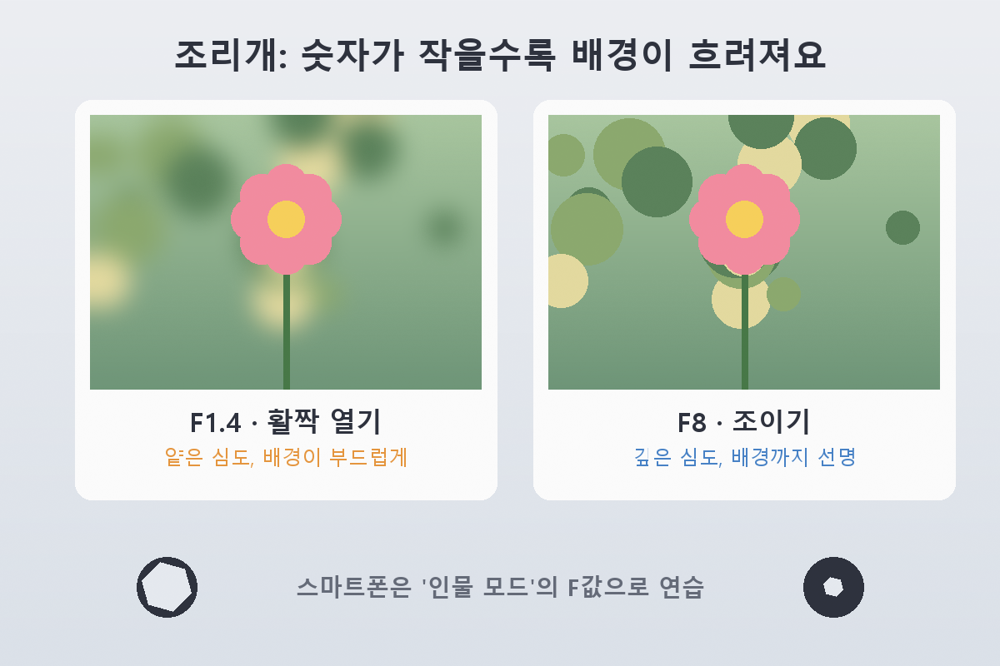
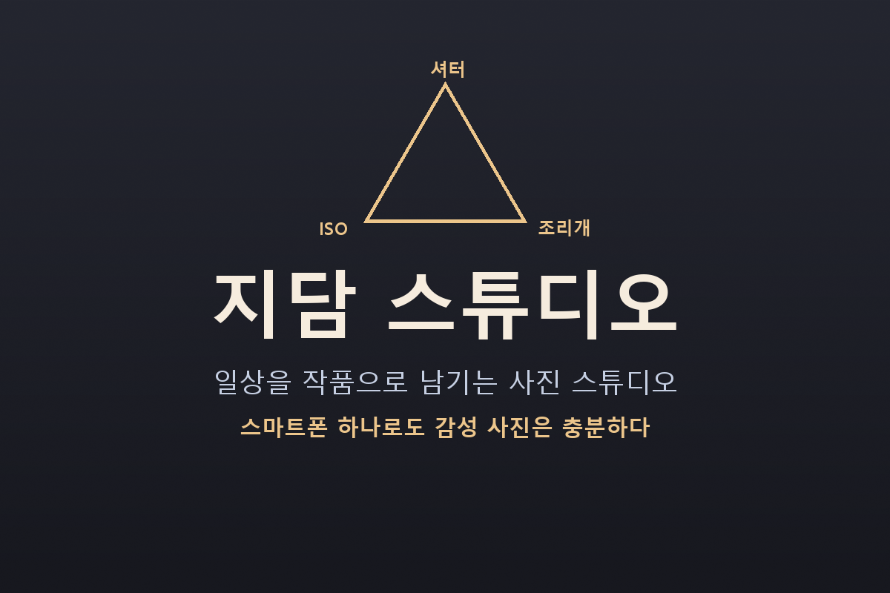

카메라 노출 기초, 셔터 속도·ISO·조리개를 스마트폰 프로 모드로 배우기

요즘 미러리스나 콤팩트 카메라에 입문하는 분들이 정말 많아졌죠. 그런데 막상 카메라를 사고 나면 셔터 속도, ISO, 조리개 같은 낯선 용어 앞에서 결국 자동 모드만 쓰게 된다는 이야기도 자주 들려요. 혹시 '카메라 공부는 카메라가 있어야 할 수 있다'고 생각하셨나요? 사실 요즘 스마트폰에는 대부분 '프로 모드' 또는 '전문가 모드'가 들어 있어서, 이 기본 개념을 직접 눈으로 확인하며 연습할 수 있어요. 노출의 3요소만 제대로 이해해도 어떤 카메라를 쓰든 사진이 훨씬 자유로워진답니다. 오늘은 카메라 촬영의 가장 기초가 되는 셔터 속도, ISO, 조리개를 스마트폰으로 하나씩 익혀 보는 방법을 소개할게요.
1. 셔터 속도: 움직임을 멈추거나 흐르게 하는 시간

셔터 속도는 '빛을 받아들이는 시간'이에요. 1/1000초처럼 짧으면 순간을 멈춘 듯 선명하게, 1초처럼 길면 움직이는 것이 흐르듯 담겨요. 프로 모드에서 'S' 또는 셔터 속도 메뉴를 찾아 직접 바꿔 보세요. 가장 쉬운 연습은 수돗물이에요. 1/1000초로 찍으면 떨어지는 물방울이 하나하나 멈춰 보이고, 1/4초로 찍으면 물줄기가 실크처럼 부드럽게 이어져요. 다만 셔터 속도가 느려질수록 손떨림도 함께 찍히기 때문에, 1/30초보다 느리게 찍을 때는 휴대폰을 벽이나 컵에 기대 고정해 주는 게 좋아요. 달리는 아이나 반려동물을 찍을 때는 1/500초 이상으로 빠르게, 야경 속 자동차 불빛 궤적을 찍을 때는 2초 이상 길게. 이렇게 상황에 맞춰 시간을 고르는 게 셔터 속도의 핵심이에요.
2. ISO: 어두울 때 밝기를 끌어올리는 감도

ISO는 센서가 빛에 얼마나 민감하게 반응하는지를 나타내는 숫자예요. 숫자가 높을수록 같은 빛에서도 사진이 밝아지지만, 대신 화면에 자글자글한 노이즈가 늘어나요. 프로 모드에서 ISO를 100에 두고 실내에서 한 장, 3200으로 올려 같은 장면을 한 장 찍어 비교해 보세요. 밝기는 비슷해 보여도 확대해 보면 3200 쪽 사진이 거칠어진 걸 알 수 있어요. 그래서 기본 원칙은 '밝은 곳에서는 ISO를 낮게, 어두운 곳에서는 필요한 만큼만 올리기'예요. 낮에는 100~200, 흐린 날이나 실내는 400~800, 밤에는 1600 정도까지가 스마트폰에서 무난한 범위예요. 셔터 속도를 더 느리게 할 수 없을 만큼 어두울 때 마지막으로 꺼내는 카드가 ISO라고 기억해 두면 헷갈리지 않아요.
3. 조리개와 심도: 배경을 흐리게 만드는 원리

조리개는 렌즈 안에서 빛이 들어오는 구멍의 크기예요. F1.8처럼 숫자가 작을수록 구멍이 크게 열려 빛이 많이 들어오고, 초점이 맞는 범위인 '심도'가 얕아져 배경이 부드럽게 흐려져요. 반대로 F11처럼 숫자가 크면 앞부터 뒤까지 모두 선명하게 찍혀서 풍경 사진에 잘 어울리고요. 대부분의 스마트폰은 실제 조리개 값이 고정되어 있지만, '인물 모드'에서 F값을 바꾸며 이 원리를 그대로 연습할 수 있어요. 인물 모드로 꽃을 찍으면서 F1.4와 F8을 번갈아 적용해 배경이 어떻게 달라지는지 비교해 보세요. 이때 피사체와 배경 사이 거리가 멀수록 흐림 효과가 더 커진다는 점도 함께 기억해 두면 좋아요. 셔터 속도, ISO, 조리개 세 가지가 서로 밝기를 주고받는다는 걸 이해하면 이제 노출을 내 마음대로 조절할 수 있어요.

오늘 배운 노출의 3요소를 정리해 볼게요. 셔터 속도는 움직임을 멈추거나 흐르게 하는 시간, ISO는 어두울 때 밝기를 끌어올리는 대신 노이즈가 늘어나는 감도, 조리개는 빛의 양과 배경 흐림을 정하는 구멍의 크기예요. 이 세 가지는 카메라든 스마트폰이든 똑같이 적용되는 사진의 기본기랍니다. 그러니 카메라를 사기 전이라도 걱정하지 마세요. 스마트폰 하나로도 감성 사진은 충분하다는 말처럼, 프로 모드만으로도 기초를 탄탄하게 다질 수 있어요. 지담 스튜디오도 처음 오시는 분들께 늘 스마트폰 프로 모드로 노출을 먼저 체험해 보시길 권해 드려요. 오늘 내용을 따라 찍어 보신 사진이나 헷갈리는 개념이 있다면 댓글로 남겨 주세요. 다음 카메라 기초 글에서 함께 풀어 볼게요. 놓치고 싶지 않다면 이웃추가도 부탁드려요!